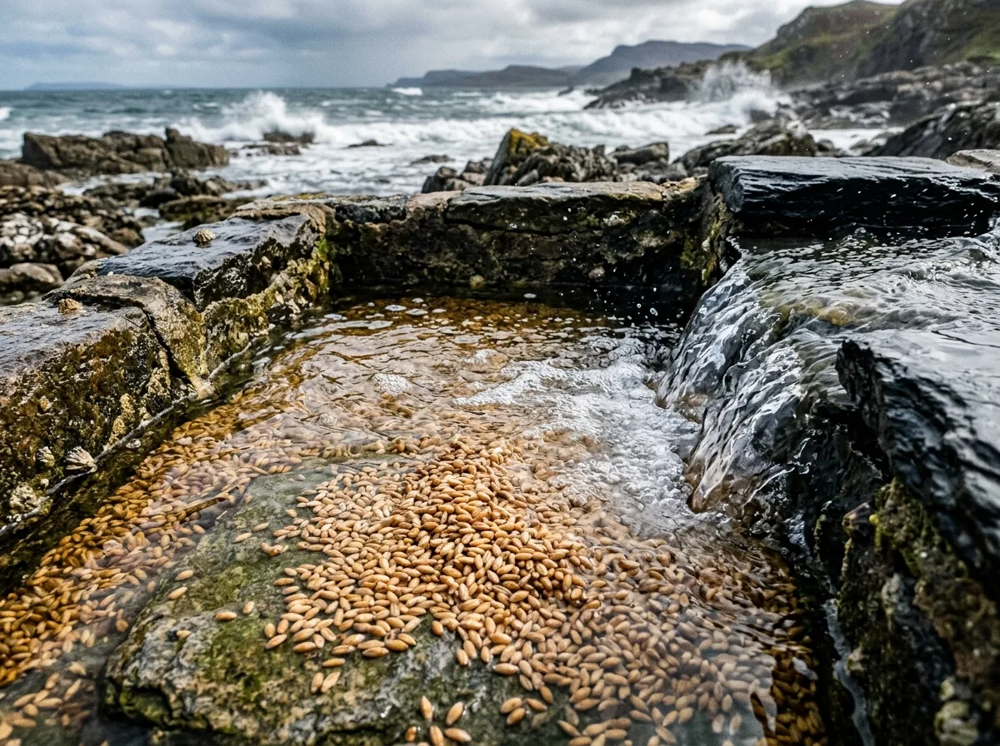

Primitive grains cultivated on unfertilised coastal machair soils and hydrated in open Atlantic surges.

Landrace Cultivar Registry
We reject the modern agricultural obsession with high-yield, low-character hybrids. Our registry consists entirely of primitive landrace variants capable of surviving the violent wind shear and salt-spray of the Hebrides. Yields are abysmal; the character is unassailable.
Hordeum vulgareHarvest: 2025
6-Row Islay Bere
An ancient, six-row barley that has been cultivated in the Scottish islands for over a millennium. It grows rapidly on poor, sandy soils and produces a grain with massive protein content and low fermentable extracts. Our steep process forces it to aggressively convert its tough starches.
Extract Potential: 340 L°/kg. This grain yields a wash that tastes of toasted oats, sea mist, and raw iodine. Extremely volatile during fermentation. £58.00 per 25 kg sack.
Avena strigosaHarvest: 2025
Scots Gray Oat
A bristle oat variant historically grown on the bleakest patches of croft land. The kernel is small, flinty, and wrapped in a thick, fibrous hull that makes our floor-turners curse the day it was planted. It requires an extended 72-hour cold steep to coax out any meaningful germination.
Extract Potential: 210 L°/kg. Provides exceptional mouthfeel and heavy lipid retention. We recommend no more than 20% in any mash bill to prevent total lauter tun collapse. £48.00 per 25 kg sack.
Triticum aestivumHarvest: 2024
Shetland Black Heritage Wheat
A rare, dark-husked wheat that thrives in high-latitude maritime climates. The grain develops a thick, waxy coat to protect against constant Atlantic gales. Our floor-malting process slowly breaks down these defensive structures over ten days.
Extract Potential: 315 L°/kg. Delivers a profound dark chocolate and bitter roasted hazelnut profile, entirely without the use of high-temperature drum roasting. £74.00 per 25 kg sack.
Secale cerealeHarvest: 2025
Sea-Salted Rye
A highly resilient rye strain grown entirely on coastal machair within fifty yards of the high-tide line. The roots dig deep into the calciferous shell sand, drawing up extraordinary levels of dissolved minerals. The grain itself is jagged, irregular, and fiercely spicy.
Extract Potential: 290 L°/kg. When kilned over a mix of heather and peat, it produces an aggressive, peppery distillate with a distinctly saline, crackling finish. £62.00 per 25 kg sack.
The Intertidal Basin Steep Sequence
We do not use chlorinated municipal water or sanitised stainless-steel conical tanks. Our grain is hydrated naturally, driven entirely by the rhythmic surges of the Atlantic tides in Loch Indaal.
Tidal Gate Intake: Grain is loaded into perforated slate troughs set directly into the coastal bedrock. At high tide, the sluice gates are opened, flooding the basins with frigid, unfiltered seawater.
18-Hour Salt-Water Soak: The grain undergoes its primary hydration cycle completely submerged in the saline current, absorbing significant trace minerals, dissolved iodine, and naturally occurring marine yeasts.
12-Hour Air Rest: As the tide recedes, the slate troughs drain naturally. The grain is left exposed to the driving coastal winds to breathe, preventing suffocation and stimulating early rootlet emergence.
Second Brine Wash & Transfer: A final tidal cycle washes away accumulated carbon dioxide and surface debris. The wet, heavy grain is then shoveled out by hand and carted up the bank to the stone malting floor for the seven-day germination.
Mineral Ash & Soil Provenance
The terroir of our malt is dictated by the unforgiving geology of the Rhinns of Islay. The soil here is not deep, fertile loam; it is a desperate mixture of crushed marine life and decayed peat.
Our barley is sown directly into the machair—a highly alkaline, sandy soil composed largely of pulverized seashells and marine calcium. This extreme alkalinity suppresses rapid starch formation, forcing the grain to develop thicker husks and higher protein concentrations. Throughout the growing season, constant westerly gales deposit a heavy layer of sea-spray chloride directly onto the stalks, locking in a baseline salinity before the harvest even begins.
Finally, the water runoff that feeds our adjacent creeks is heavily filtered through upland peat mosses, saturating the groundwater with humic acids. It is this exact combination of alkaline soil, airborne sodium, and acidic peat-water that makes our grain chemically impossible to replicate in a mainland factory.
Malt Quality FAQ
How does the high marine salinity affect yeast viability?
The 180 mg/kg sodium chloride retention will absolutely stress commercial distiller's yeast. We recommend extending your fermentation times by at least 48 hours and pitching at a slightly higher rate. The stressed yeast produces a magnificent array of complex, estery congeners.
Will the 6-Row Bere block my lauter tun?
Almost certainly, if you treat it like standard pale malt. The thick husks and high protein content create a dense mash bed. You must adjust your mill gap to leave the husks as intact as possible and slow your runoff speed by a third. Patience is mandatory.
How do you manage the elevated mash pH?
The alkaline nature of the machair-grown grain naturally elevates the mash pH. Most of our clients find they need to dose their strike water with a small amount of lactic acid to hit the optimum 5.2 - 5.4 range for efficient enzymatic conversion.
Is the peat smoke profile medicinal or bonfire?
Distinctly medicinal. Because our peat is cut from low-lying coastal banks rather than inland heather moors, it is rich in decayed marine matter and sulfur compounds. It yields a sharp, iodine-heavy smoke rather than a sweet, woody bonfire note.
Do you offer milling services?
No. Once the grain is milled, the delicate volatile oils and phenols begin to degrade immediately. We dispatch all our malt entirely whole-grain in lined jute sacks. You must mill it on-site immediately prior to mashing.